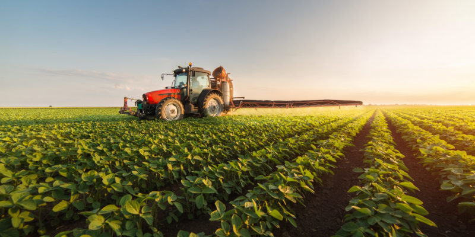

Bienvenidos a nuestra tienda de productos organicos
Importancia de los Productos Orgánicos
Salud
Los productos orgánicos se cultivan sin el uso de pesticidas
sintéticos y fertilizantes químicosiasMedio Ambiente
La ausencia de pesticidas químicos favorece la biodiversidad
permitiendo que una variedad de organismos beneficiosos prosperen.

Economia
Comprar productos orgánicos a menudo significa apoyar a los agricultores
locales que utilizan prácticas sostenibles.